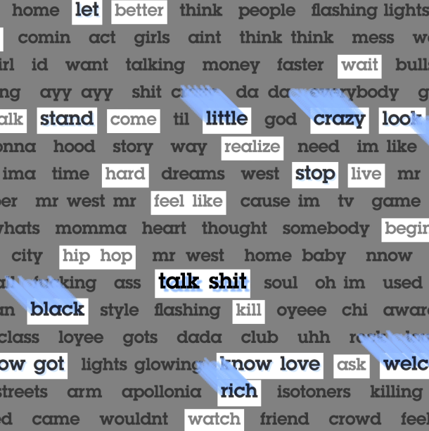
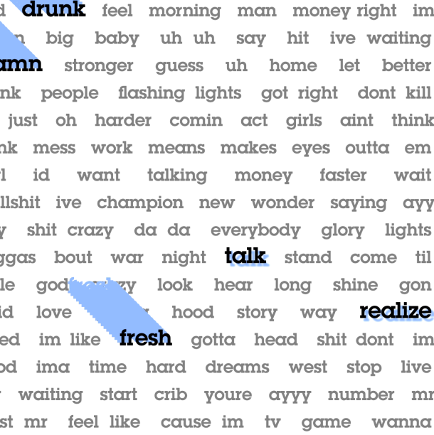
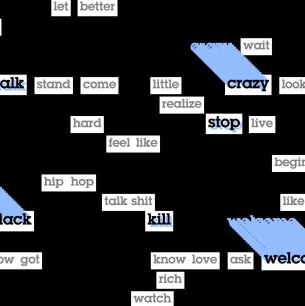

Prozess
In diesem prozessorientierten Projekt konnte ich zahlreiche technische Hürden überwinden. So konnte ich erstmals Python für die Datenverarbeitung nutzen, Texte durch Creative Coding animieren und sogar eine kleine Website umsetzen. Diese Tools werden mir bei zukünftigen Projekten mit Sicherheit noch nützlich sein.


